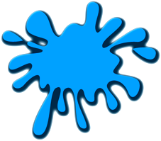
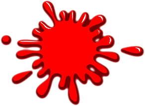
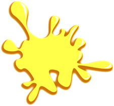
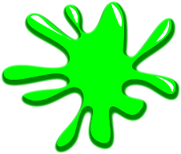

“Memory Art” Documentation by “Code This Lab S.r.l.” v1.0
“Memory Art”
Created: 24/04/2014
By: Code This Lab S.r.l.
Email: info@codethislab.com
Thank you for purchasing our game. If you have any questions that are beyond the scope of this help file, please feel free to email via user page contact form here. Thanks so much!
Table of Contents
- Description
- Folder Contents
- Getting Started
- HTML Structure
- CSS Files and Structure
- JavaScript
- Game functions
- Objects in level
- Change Graphic
- Disable Sounds
- Wordpress Plugin
A) Description - top
Memory Art is a clone of the famous game Simon. Your goal is to memorize the color sequence and repeat it.
The ZIP package contains the game with 968x1224 resolution that scales to fit the whole screen device
Just warning that for very wide screens, the game may not be perfectly full screen.
The game is fully compatible with all most common mobile devices.
Sounds are enabled for mobile but we can't grant full audio compatibility on all mobile devices due to some well-know issue between some mobile-browser and HTML5.
So if you want to avoid sound loading, please read Disable Sound section).
WARNING: Sounds can't be enabled for Windows Phone as this kind of device have unsolved issues with 'audio' and 'video' tag.
B) Folder Contents - top
The item package contains the following folders:
- ctl_arcade_wp_plugin:
This folder contains the game version (zip file inside) that can be used with wordpress plugin CTL Arcade - game:
This folder contains the full source code that you can edit as you need. - live_demo:
This folder contains the obfuscated version of the game. WARNING: you should use this version if you don't have to edit the original game. - readme:
This folder contains the readme of the game.
B) Getting Started - top
To install the game just upload on your server the game folder live_demo.
- Game Embedding: The proper way to embed the game is in a full-screen web page or in an iframe.
In the first case the game will fit the screen size, in the second, that of the iframe.
If the iframe size matches that of the screen, the game will fit accordingly.
The alignment will be proportioned to the aspect ratio of the game.
To install the game in a WordPress website, we suggest to use our plugin CTL Arcade . - Save Score: if you need to call your php function for saving score, you can add it in the index.html file:
$(document).ready(function(){ var oMain = new CMain(); $(oMain).on("save_score", function(evt,score) { //ADD YOUR CODE HERE }); }); - Localization: You can easily change game text for different languages, changing string in CLang.js
TEXT_MAX_SEQ = "MAX SEQUENCE"; TEXT_CUR_SEQ = "CURRENT SEQUENCE"; TEXT_MEM_SEQ = "MEMORIZE THE SEQUENCE"; TEXT_REP_SEQ = "REPEAT THE SEQUENCE IN THE RIGHT WAY"; TEXT_PLAY = "PLAY"; TEXT_GAMEOVER = "GAME OVER"; TEXT_HELP = "MEMORIZE THE COLOR SEQUENCE AND REPEAT IT IN THE SAME ORDER"; TEXT_SHARE_IMAGE = "200x200.jpg"; TEXT_SHARE_TITLE = "Congratulations!"; TEXT_SHARE_MSG1 = "You collected "; TEXT_SHARE_MSG2 = " points!
Share your score with your friends!"; TEXT_SHARE_SHARE1 = "My score is "; TEXT_SHARE_SHARE2 = " points! Can you do better?";
var oMain = new CMain({
num_lives:3, //NUMBER OF LIVES
time_light:300, //DURATION IN MILLISECONDS OF ILLUMINATED SYMBOL
time_darken:500 //TIME INTERVAL BETWEEN ILLUMINATION OF DIFFERENT SYMBOLS. INCREASE THIS VALUE TO MAKE THE GAME EASIER.
});
C) HTML Structure - top
This game have the canvas tag in the body. The ready event into the body calls the main function of the game: CMain().
The head section declares all the javascript functions of the game. The whole project uses a typical object-oriented approach.
In the init function there are 7 mapped events that can be useful eventually for stats
D) CSS Files and Structure - top
The game use two CSS files. The first one is a generic reset file. Many browser interpret the default behavior of html elements differently. By using a general reset CSS file, we can work round this. Keep in mind, that these values might be overridden somewhere else in the file.
The second file contains all of the specific stylings for the canvas and some hack to be fully compatible with all most popular mobile devices
E) JavaScript - top
This game contains:
- jQuery
- Our custom scripts
- CreateJs plugin
- jQuery is a Javascript library that greatly reduces the amount of code that you must write.
- The game have the following js files:
- CMain: the main class called by the index file.
This file controls the sprite_lib.js file that manages the sprite loading, the game sounds, the loop game and initialize the canvas with the CreateJs library - ctl_utils: this file manages the canvas resize and its centering
- sprite_lib: this class loads all images declared in the main class
- settings: general game settings
- CLang: global string variables for language localization
- CPreloader: simple text preloader to show resources loading progress
- CMenu: simple menu with play button
- CGfxButton: this class create a standard button
- CTextButton: this class create a standard text button
- CToggle: this class create a standard toggle button
- CHelp: this class manages the help panel that appears when game starts
- CGame: this class manages the game logic and interface
- CEndPanel: this class shows the game over panels
- CSeqButton: this class manages the clickable color button
- CMain: the main class called by the index file.
- CreateJs is a suite of modular libraries and tools which work together to enable rich interactive content on open web technologies via HTML5.
Resuming, the complete game flow is the following:
- The index.html file calls the CMain.js file after ready event is called
- The main class calls CPreloader.js to init preloader text and start sprite loading
- When all sprites contained in "/sprites" folder and sounds (if not mobile) are loaded, the main class removes the preloader and calls the CMenu.js file that shows the main menu
- If user click on the play button in main menu, the CGame.js class is called and the game starts
- The game class shows immediately a help screen that explain briefly the game instructions. When user click on this panel, the game finally starts
- If player fails to reproduce the correct color sequence, the game shows a Game Over panel with the final score.
- If user click on game over panel, the game returns to the menu screen
F) Game functions - top
In this section will be explained all the most important functions used in CGame.js file.- _init()
This function attach on the canvas all game sprites like background (oBg), GUI and help panel. - unload()
This function clear the game canvas when player decides to exit from the game. - initButtons()
This function init all the color buttons on the level. - _onButtonReleased()
This function is called when a color button is clicked. - _lostLife()
This function is called when player click the wrong color button. - _gameOver()
This function is called when player loose all the lives.
I) Objects in level - top
The game contains color buttons png in the folder /sprites
- current objects in game:
   
H) Change Graphic - top
You can easily change all the game graphic, replacing all the file you need in the "/sprites" folder. Just respect file format (.png or .jpg) and size if you don't want to change any code line.
I) Disable Sounds - top
If you want to disable all the sounds for mobile devices, you have to change the following value in settings.js file:
var DISABLE_SOUND_MOBILE = true;
J) Wordpress Plugin - top
CTL Arcade will allow you to add a real arcade on your worpress website, in this way your users will be more involved and will stay connected longer.
It's possible to add Ads banner at the beginning of each game and at the end of each level. This will give you a new tool to increase your revenues.
Your own users will promote your website sharing their scores on the main Social Networks, with no extra costs for you.
You'll get by default the score-sharing on Twitter. To add Facebook just follow the guideline below.
3 widgets can be added in your pages through a shortcode.
- Game iframe
- Rate the Game
- Leaderboard
- PHP 4.3
- WordPress 4.3.1
- HTML5
- Canvas
- Javascript / jQuery
You can find it here!

Once again, thank you so much for purchasing this game. Fell free to contact us if you have any questions or issue relating to this game. No guarantees, but we'll do our best to assist.
CODE THIS LAB S.R.L.